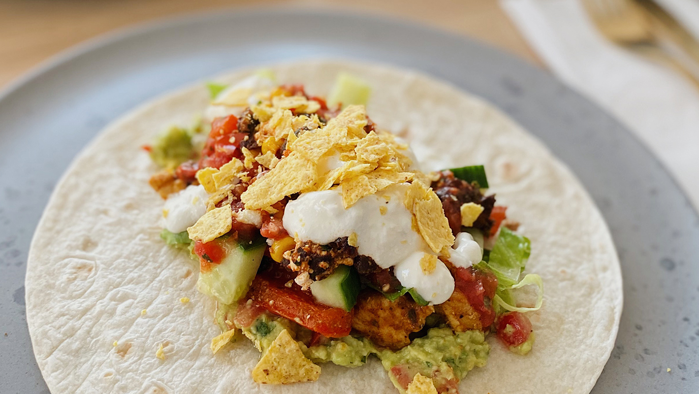

Tacos
Description
This is how you make swedish fredagstacos
Ingredients
- Minced meat
- Cucumber
- Tomatoes
- Corn
- Flatbread
- Taco sauce
- Avocado
- Tacospice
- Creme Fraiche
Steps
- Fry the meat, when water comes out from the meat -> add the spicemix
- Dice the vegetables
- Heat up the bread just before assembling the taco
- Put the bread on a plate, start by spreading some Creme Fraiche onto the bread
- Add the meat, and top it with your prefered vegetables